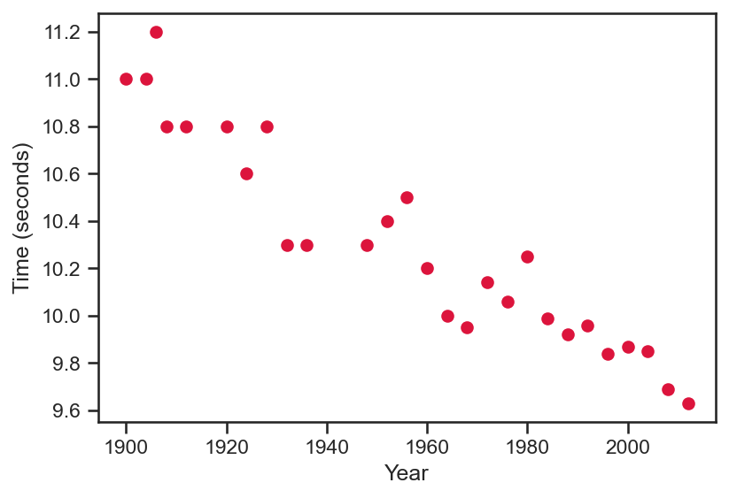
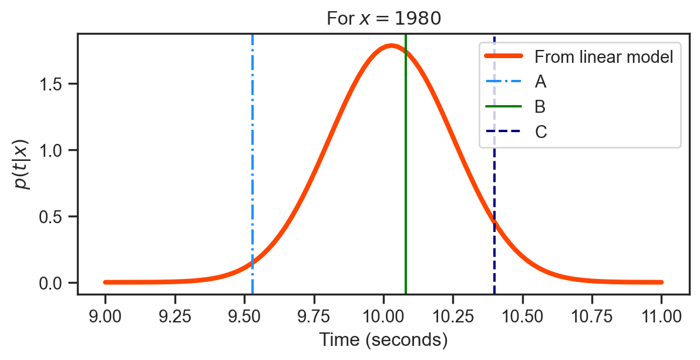

In this lecture, we will explore three distinct but related flavors of modelling.
Linear least squares model
Gaussian noise model (introducing the idea of likelihood)
Full Bayesian treatment (next time!)
Much of the exposition shown here is based on the first three chapters of Rogers and Girolami’s, A First Course in Machine Learning.
Linear least squares
Consider the data shown in the plot below. It shows the winning times for the men’s 100 meter race at the Summer Olympics for many years.

Our goal will be to fit a model to this data. To begin, we will consider a linear model, i.e., \[
t = f \left( x; {\color{blue}{w_0}}, {\color{blue}{w_1}} \right) = {\color{blue}{w_0}} + {\color{blue}{w_1}} x
\] where \(x\) is the year and \(t\) is the winning time.
\({\color{blue}{w_0}}\) and \({\color{blue}{w_1}}\) are unknown model parameters that we need to ascertain.
Good sense would suggest that the best line passes as closely as possible through all the data points on the left.
Linear least squares
Defining a good model
One common strategy for defining this is based on the squared distance between the truth and the model. Thus, for a given year, \(t_i\), this is written as: \[
\mathcal{L}_{i} = \left( t_i - f \left( x_i; {\color{blue}{w_0}}, {\color{blue}{w_1}} \right) \right)^2.
\]
However, as we want a model that fits well across all the data, we may consider the average across the entire data set, i.e., all \(N\) data points. This is given by: \[
\mathcal{L} = \frac{1}{N} \sum_{i=1}^{N} \mathcal{L}_{i} = \frac{1}{N} \sum_{i=1}^{N} \left( t_i - f \left( x_i; {\color{blue}{w_0}}, {\color{blue}{w_1}} \right) \right)^2
\]
Note that this loss function is always positive, and the lower it is the better! Finding optimal values for \({\color{blue}{w_0}}, {\color{blue}{w_1}}\) can be expressed as \[
\underset{{\color{blue}{w_0}}, {\color{blue}{w_1}}}{argmin} \; \; \frac{1}{N} \sum_{i=1}^{N} \left( t_i - f \left( x_i; {\color{blue}{w_0}}, {\color{blue}{w_1}} \right) \right)^2
\]
Linear least squares
Matrix-vector notation
It will be very useful to work with vectors and matrices. For convenience, we define: \[
\mathbf{X}=\left[\begin{array}{cc}
1 & x_{1}\\
1 & x_{2}\\
\vdots & \vdots\\
1 & x_{N}
\end{array}\right] = \left[\begin{array}{c}
\mathbf{x}_{1}^{T}\\
\mathbf{x}_{2}^{T}\\
\vdots \\
\mathbf{x}_{N}^{T}
\end{array}\right], \; \; \; \; \; \mathbf{t} =\left[\begin{array}{c}
t_{1}\\
t_{2}\\
\vdots\\
t_{N}
\end{array}\right], \; \; \; \; \; \mathbf{{\color{blue}{w}}} = \left[\begin{array}{c}
{\color{blue}{w_0}}\\
{\color{blue}{w_1}}
\end{array}\right]
\]
The loss function from the prior slide is equivalent to writing \[
\mathcal{L} = \frac{1}{N} \left( \mathbf{t} - \mathbf{X} \mathbf{{\color{blue}{w}}} \right)^{T} \left( \mathbf{t} - \mathbf{X} \mathbf{{\color{blue}{w}}} \right).
\]
This can be expanded to yield \[
\mathcal{L} = \frac{1}{N} \left( \mathbf{t}^{T} - \left( \mathbf{X} \mathbf{{\color{blue}{w}}} \right)^T \right)\left( \mathbf{t} - \mathbf{X} \mathbf{{\color{blue}{w}}} \right) = \frac{1}{N} \left[ \mathbf{t}^{T} \mathbf{t} - 2 \mathbf{t}^{T} \mathbf{X} \mathbf{{\color{blue}{w}}} + \mathbf{{\color{blue}{w}}}^T \mathbf{X}^{T} \mathbf{X} \mathbf{{\color{blue}{w}}} \right]
\]
Linear least squares
Minimizing the loss
As our objective is to minimize the loss, the obvious idea is to find out for which \(\mathbf{{\color{blue}{w}}}\), the derivative of the loss function, \(\partial \mathcal{L} / \partial \mathbf{{\color{blue}{w}}}\), goes to zero.
Note that in practice, we refer to these points as turning points as they may equally correspond to maxima, minima, or saddle points. A positive second derivative is a sure sign of a minima.
Prior to working out the derivatives, it will be useful to take note of the following identities on the left below.
\(g \left( \mathbf{{\color{red}{v}}} \right)\)
\(\partial g / \partial \mathbf{{\color{red}{v}}}\)
The derivative of the loss function is given by \[
\frac{\partial \mathcal{L}}{\partial \mathbf{{\color{blue}{w}}}} = - \frac{2}{N} \mathbf{X}^{T} \mathbf{t} + \frac{2}{N} \mathbf{X}^{T} \mathbf{X} \mathbf{{\color{blue}{w}}}
\]
Setting the derivative to zero, we have \[
\mathbf{X}^{T} \mathbf{X} \mathbf{{\color{blue}{w}}} = \mathbf{X}^{T} \mathbf{t} \; \; \; \Rightarrow \; \; \; \hat{\mathbf{{\color{blue}{w}}}} = \left( \mathbf{X}^{T} \mathbf{X} \right)^{-1} \mathbf{X}^{T} \mathbf{t}
\] where \(\hat{\mathbf{{\color{blue}{w}}}}\) represents the value of \(\mathbf{{\color{blue}{w}}}\) that minimizes the loss.
For this result we set \[
\mathbf{X}=\left[\begin{array}{cc}
1 & x_{1}\\
1 & x_{2}\\
\vdots & \vdots\\
1 & x_{N}
\end{array}\right]
\] and solve for \(\hat{\mathbf{{\color{blue}{w}}}} = \left( \mathbf{X}^{T} \mathbf{X} \right)^{-1} \mathbf{X}^{T} \mathbf{t}\).
Once these weights are obtained, we can extrapolate (blue line) over the years.
Note the graph title shows the loss function value and the \(L_2\) norm, \(||\hat{\mathbf{{\color{blue}{w}}}} ||_{2}\).
For this result we set \[
\mathbf{X}=\left[\begin{array}{cccccc}
1 & x_{1} & x_{1}^2 & x_{1}^3 & \ldots & x_{1}^{8} \\
1 & x_{1} & x_{1}^2 & x_{1}^3 & \ldots & x_{1}^{8} \\
\vdots & \vdots & \vdots & \vdots & \ldots & \vdots \\
1 & x_{N} & x_{N}^2 & x_{N}^3 & \ldots & x_{N}^{8} \\
\end{array}\right]
\] and solve for \(\hat{\mathbf{{\color{blue}{w}}}} = \left( \mathbf{X}^{T} \mathbf{X} \right)^{-1} \mathbf{X}^{T} \mathbf{t}\).
Once these weights are obtained, we can extrapolate (blue line) over the years.
Note the graph title shows the loss function value and the \(L_2\) norm, \(||\hat{\mathbf{{\color{blue}{w}}}} ||_{2}\).
Linear least squares
With regularization
There is clearly a trade-off between the:
Complexity of the model in terms of the number of weights, and
the value of the loss function.
There is also the risk of over-fitting to the data. For instance, if we had only 9 data points, then the last model would have interpolated each point, at the risk of not being generalizable.
As we do not want our model to be too complex, there are two relatively simple recipes:
Split the data into test and train (your homework!)
Add a regularization term, i.e., \[
\mathcal{L} = \mathcal{L} + \lambda \mathbf{{\color{blue}{w}}}^{T} \mathbf{{\color{blue}{w}}}
\] where \(\lambda\) is a constant.
Maximum likelihood
The linear model from before is unable to capture each data point, and there are errors between the true data and the model.
Now we will consider a paradigm where these errors are explicitly modelled.
We consider a model of the form \[
t_j = f \left( \mathbf{x}_{n}; \mathbf{{\color{blue}{w}}} \right) + \epsilon_{n} \; \; \; \epsilon_{n} \sim \mathcal{N}\left(0, \sigma^2 \right), \; \; \; \; \text{where} \; j \in \left[1, N \right]
\tag{1}\]
Recall, we had previously learnt that adding a constant to a Gaussian random variable alters its mean. Thus, the random variable \(t_j\) has a probability density function \[
p \left( t_j | \mathbf{x}_{j}, \mathbf{{\color{blue}{w}}}, \sigma^2 \right) = \mathcal{N} \left( \mathbf{{\color{blue}{w}}}^{T} \mathbf{x}_{j} , \sigma^2\right)
\]
Carefully note the conditioning: the probability density function for \(t_j\) depends on particular values of \(\mathbf{x}_{j}\) and \(\mathbf{{\color{blue}{w}}}\).
Maximum likelihood
Defining the likelihood
If we evaluate the linear model from before, and assume that in Equation 1\(\sigma^2 = 0.05\), we would find that \[
p \left( t_j | \mathbf{x}_{j} = \left[ 1, 1980 \right]^{T} ,\mathbf{{\color{blue}{w}}} = \left[10.964, -1.31 \right]^{T}, \sigma^2 = 0.05 \right) = \mathcal{N} \left( 10.03, 0.05 \right)
\] This quantity is known as the likelihood of the \(n\)-th data point.
import numpy as npimport matplotlib.pyplot as pltimport pandas as pdfrom scipy.stats import multivariate_normal# Get the data df = pd.read_csv('notebooks/data/data100m.csv')df.columns=['Year', 'Time']N = df.shape[0]max_year, min_year = df['Year'].values.max() , df['Year'].values.min()x = (df['Year'].values.reshape(N,1) - min_year)/(max_year - min_year)t = df['Time'].values.reshape(N,1)X_func =lambda u : np.hstack([np.ones((u.shape[0],1)), u])X = X_func(x)w_hat = np.linalg.inv(X.T @ X) @ X.T @ t# Specific year!year_j =1980X_j = X_func(np.array( [ (year_j - min_year) / (max_year - min_year) ] ).reshape(1,1) )time_j =float(X_j @ w_hat)T_1980 = multivariate_normal(time_j, 0.05)ti = np.linspace(9, 11, 100)pt_x = T_1980.pdf(ti)fig = plt.figure(figsize=(7,3))plt.plot(ti, pt_x, '-', color='orangered', lw=3, label='From linear model')plt.axvline(9.53, linestyle='-.', color='dodgerblue', label='A')plt.axvline(10.08, linestyle='-', color='green', label='B')plt.axvline(10.40, linestyle='--', color='navy', label='C')plt.xlabel('Time (seconds)')plt.ylabel(r'$p \left( t | x \right)$')plt.title(r'For $x=1980$')plt.legend()plt.show()

Note that for a continuous random variable \(t\), \(p\left( t \right)\) cannot be interpreted as a probability.
The height of the curve to the left tells us how likely it is that we observe a particular \(t\) for \(x=1980\).
The most likely is B, followed by C and then A. Note the actual winning time is \(t_{n}=10.25\).
While we obviously cannot change the actual winning time, we can change \(\mathbf{{\color{blue}{w}}}\) and \(\sigma^2\) to move the density to make it as high as possible at \(t=10.25\).
Code
import numpy as npimport matplotlib.pyplot as pltimport pandas as pdfrom scipy.stats import multivariate_normal# Get the data df = pd.read_csv('notebooks/data/data100m.csv')df.columns=['Year', 'Time']N = df.shape[0]max_year, min_year = df['Year'].values.max() , df['Year'].values.min()x = (df['Year'].values.reshape(N,1) - min_year)/(max_year - min_year)t = df['Time'].values.reshape(N,1)X_func =lambda u : np.hstack([np.ones((u.shape[0],1)), u])X = X_func(x)w_hat = np.linalg.inv(X.T @ X) @ X.T @ t# Specific year!year_j =1980X_j = X_func(np.array( [ (year_j - min_year) / (max_year - min_year) ] ).reshape(1,1) )time_j =float(X_j @ w_hat)T_1980 = multivariate_normal(time_j, 0.05)ti = np.linspace(9, 11, 100)pt_x = T_1980.pdf(ti)fig = plt.figure(figsize=(7,3))plt.plot(ti, pt_x, '-', color='orangered', lw=3, label='From linear model')plt.axvline(9.53, linestyle='-.', color='dodgerblue', label='A')plt.axvline(10.08, linestyle='-', color='green', label='B')plt.axvline(10.40, linestyle='--', color='navy', label='C')plt.xlabel('Time (seconds)')plt.ylabel(r'$p \left( t | x \right)$')plt.title(r'For $x=1980$')plt.legend()plt.close()
Maximum likelihood
Defining the likelihood
This idea of finding parameters that can maximize the likelihood is very important in machine learning.
However, in general, we are seldom interested in the likelihood of an isolated data point – we are interested in the likelihood across all the data.
This leads to the conditional distribution across all \(N\) data points \[
p \left( t_1, \ldots, t_N | \mathbf{x}_1, \ldots, \mathbf{x}_{N}, \mathbf{{\color{blue}{w}}}, \sigma^2 \right)
\]
If we assume the noise at each data point is independent, this conditional density can be factorized into \(N\) separate terms \[
\mathcal{L} = p \left( \mathbf{t} | \mathbf{X}, \mathbf{{\color{blue}{w}}}, \sigma^2 \right) = \prod_{j=1}^{N} p \left( t_j | \mathbf{x}_{j}, \mathbf{{\color{blue}{w}}}, \sigma^2 \right) = \prod_{j=1}^{N} \mathcal{N} \left(\mathbf{{\color{blue}{w}}}^{T} \mathbf{x}_{n} \right).
\tag{2}\]
Note that the \(t_j\) values are not completely independent—times have clearly decreased over the years! They are conditionally independent. For a given value of \(\mathbf{{\color{blue}{w}}}\) the \(t_j\) are independent; otherwise they are not.
We will now maximize the likelihood (see Equation 2 ).
Maximum likelihood
Maximizing the logarithm of the likelihood
Plugging in the definition of a Gaussian probability density function into Equation 2 we arrive at \[
\mathcal{L} = \prod_{j=1}^{N} \frac{1}{\sqrt{2 \pi \sigma^2}} exp \left( -\frac{1}{2 \sigma^2} \left(t_j - f \left( \mathbf{x}_{j}; \mathbf{{\color{blue}{w}}} \right) \right)^2 \right)
\]
Just as we did earlier, with the least squares solution, we can set the derivative of the logarithm of the loss function to be zero. \[
\frac{\partial \; log \left( \mathcal{L} \right) }{\partial \mathbf{{\color{blue}{w}}} } = \frac{1}{\sigma^2} \sum_{j=1}^{N} \mathbf{x}_{j} \left( t_{j} - \mathbf{x}_{j}^{T} \mathbf{{\color{blue}{w}}} \right) = \frac{1}{\sigma^2} \sum_{j=1}^{N} \mathbf{x}_{j} t_j - \mathbf{x}_{j} \mathbf{x}_{j}^{T} \mathbf{{\color{blue}{w}}} \equiv 0
\]
Just as we did before, we can use matrix vector notation to write this out as
Thus, the maximum likelihood solution for \(\mathbf{{\color{blue}{w}}}\) is exactly the solution for the least squares problem! Minimizing the squared loss is equivalent to the maximum likelihood solution if the noise is assumed Gaussian.
Maximum likelihood
Maximizing the logarithm of the likelihood
What remains now is to compute the maximum likelihood estimate of the noise, \(\sigma\). Assuming that \(\hat{\mathbf{{\color{blue}{w}}}} = \mathbf{{\color{blue}{w}}}\) we can write \[
\frac{\partial \; log \left( \mathcal{L} \right) }{\partial \sigma } = - \frac{N}{\sigma} + \frac{1}{\sigma^3} \sum_{j=1}^{N} \left( t_j - \mathbf{x}^{T} \hat{\mathbf{{\color{blue}{w}}} } \right)^2 \equiv 0.
\]
This expression states that the variance is the averaged squared error, which intuitively makes sense. Re-writing this using matrix notation, we have \[
\hat{\sigma^2} = \frac{1}{N} \left( \mathbf{t} - \mathbf{X} \hat{\mathbf{{\color{blue}{w}}} } \right)^{T} \left( \mathbf{t} - \mathbf{X} \hat{\mathbf{{\color{blue}{w}}} } \right) = \frac{1}{N} \left( \mathbf{t}^{T} \mathbf{t} - 2 \mathbf{t}^{T} \mathbf{X} \hat{\mathbf{{\color{blue}{w}}} } + \hat{\mathbf{{\color{blue}{w}}} }^{T} \mathbf{X}^{T} \mathbf{X} \hat{\mathbf{{\color{blue}{w}}} } \right)
\]
Plugging in \(\hat{\mathbf{{\color{blue}{w}}}} = \left( \mathbf{X}^{T} \mathbf{X} \right)^{-1} \mathbf{X}^{T} \mathbf{t}\), we arrive at \[
\hat{\sigma^2} = \frac{1}{N} \left( \mathbf{t}^{T} \mathbf{t} - \mathbf{t}^{T} \mathbf{X} \left( \mathbf{X}^{T} \mathbf{X} \right)^{-1} \mathbf{X}^{T} \mathbf{t}\right)
\] after a bit of algebra.
---title: "Lecture 6"subtitle: "Linear modelling"format: revealjs: html-math-method: katex slide-number: true chalkboard: buttons: true theme: [serif, style.scss] background-color: "white" preview-links: auto logo: images/quarto.png footer: AE8803 | Gaussian Processes for Machine Learning width: 1200 height: 700resources: - demo.pdf---## The three model levels {background-color="white"} In this lecture, we will explore three distinct but related flavors of modelling. - #### Linear least squares model - #### Gaussian noise model (introducing the idea of likelihood)- #### Full Bayesian treatment (next time!)<br>Much of the exposition shown here is based on the first three chapters of Rogers and Girolami's, *A First Course in Machine Learning*. ## Linear least squares {background-color="white"} - Consider the data shown in the plot below. It shows the winning times for the men's 100 meter race at the Summer Olympics for many years. ::: columns::: {.column width="60%"}:::::: {.column width="40%"}- Our goal will be to fit a model to this data. To begin, we will consider a linear model, i.e.,$$t = f \left( x; {\color{blue}{w_0}}, {\color{blue}{w_1}} \right) = {\color{blue}{w_0}} + {\color{blue}{w_1}} x$$ where $x$ is the year and $t$ is the winning time. - ${\color{blue}{w_0}}$ and ${\color{blue}{w_1}}$ are *unknown* model parameters that we need to ascertain.- Good sense would suggest that the **best** line passes as closely as possible through all the data points on the left. ::::::## Linear least squares {background-color="white"} ### Defining a good model- One common strategy for defining this is based on the *squared* distance between the truth and the model. Thus, for a given year, $t_i$, this is written as:$$\mathcal{L}_{i} = \left( t_i - f \left( x_i; {\color{blue}{w_0}}, {\color{blue}{w_1}} \right) \right)^2. $$- However, as we want a model that fits well *across* all the data, we may consider the average across the entire data set, i.e., all $N$ data points. This is given by:$$\mathcal{L} = \frac{1}{N} \sum_{i=1}^{N} \mathcal{L}_{i} = \frac{1}{N} \sum_{i=1}^{N} \left( t_i - f \left( x_i; {\color{blue}{w_0}}, {\color{blue}{w_1}} \right) \right)^2$$- Note that this *loss* function is always positive, and the lower it is the better! Finding optimal values for ${\color{blue}{w_0}}, {\color{blue}{w_1}}$ can be expressed as$$\underset{{\color{blue}{w_0}}, {\color{blue}{w_1}}}{argmin} \; \; \frac{1}{N} \sum_{i=1}^{N} \left( t_i - f \left( x_i; {\color{blue}{w_0}}, {\color{blue}{w_1}} \right) \right)^2$$::: footerNote that other loss functions can be considered. A common example is the absolute loss, i.e., $\mathcal{L}_{i} = | t_i - f \left( x_i; {\color{blue}{w_0}}, {\color{blue}{w_1}} \right)|$:::## Linear least squares {background-color="white"} ### Matrix-vector notation- It will be very useful to work with vectors and matrices. For convenience, we define:$$\mathbf{X}=\left[\begin{array}{cc}1 & x_{1}\\1 & x_{2}\\\vdots & \vdots\\1 & x_{N}\end{array}\right] = \left[\begin{array}{c}\mathbf{x}_{1}^{T}\\\mathbf{x}_{2}^{T}\\\vdots \\\mathbf{x}_{N}^{T}\end{array}\right], \; \; \; \; \; \mathbf{t} =\left[\begin{array}{c}t_{1}\\t_{2}\\\vdots\\t_{N}\end{array}\right], \; \; \; \; \; \mathbf{{\color{blue}{w}}} = \left[\begin{array}{c}{\color{blue}{w_0}}\\{\color{blue}{w_1}}\end{array}\right]$$- The loss function from the prior slide is equivalent to writing$$\mathcal{L} = \frac{1}{N} \left( \mathbf{t} - \mathbf{X} \mathbf{{\color{blue}{w}}} \right)^{T} \left( \mathbf{t} - \mathbf{X} \mathbf{{\color{blue}{w}}} \right).$$- This can be expanded to yield$$\mathcal{L} = \frac{1}{N} \left( \mathbf{t}^{T} - \left( \mathbf{X} \mathbf{{\color{blue}{w}}} \right)^T \right)\left( \mathbf{t} - \mathbf{X} \mathbf{{\color{blue}{w}}} \right) = \frac{1}{N} \left[ \mathbf{t}^{T} \mathbf{t} - 2 \mathbf{t}^{T} \mathbf{X} \mathbf{{\color{blue}{w}}} + \mathbf{{\color{blue}{w}}}^T \mathbf{X}^{T} \mathbf{X} \mathbf{{\color{blue}{w}}} \right]$$## Linear least squares {background-color="white"} ### Minimizing the loss- As our objective is to minimize the loss, the *obvious* idea is to find out for which $\mathbf{{\color{blue}{w}}}$, the derivative of the loss function, $\partial \mathcal{L} / \partial \mathbf{{\color{blue}{w}}}$, goes to zero. - Note that in practice, we refer to these points as **turning points** as they may equally correspond to maxima, minima, or saddle points. A positive second derivative is a sure sign of a minima. - Prior to working out the derivatives, it will be useful to take note of the following identities on the left below.::: columns::: {.column width="35%"}| $g \left( \mathbf{{\color{red}{v}}} \right)$ | $\partial g / \partial \mathbf{{\color{red}{v}}}$ || :--- | :----: | | $\mathbf{{\color{red}{v}}}^{T}\mathbf{x}$ | $\mathbf{x}$ | | $\mathbf{x}^{T} \mathbf{{\color{red}{v}}}$ | $\mathbf{x}$ | | $\mathbf{{\color{red}{v}}}^{T} \mathbf{{\color{red}{v}}}$ | $2\mathbf{{\color{red}{v}}}$ | | $\mathbf{{\color{red}{v}}}^{T} \mathbf{C} \mathbf{{\color{red}{v}}}$ | $2\mathbf{C} \mathbf{{\color{red}{v}}}$ | :::::: {.column width="65%"}- The derivative of the loss function is given by $$\frac{\partial \mathcal{L}}{\partial \mathbf{{\color{blue}{w}}}} = - \frac{2}{N} \mathbf{X}^{T} \mathbf{t} + \frac{2}{N} \mathbf{X}^{T} \mathbf{X} \mathbf{{\color{blue}{w}}}$$- Setting the derivative to zero, we have$$\mathbf{X}^{T} \mathbf{X} \mathbf{{\color{blue}{w}}} = \mathbf{X}^{T} \mathbf{t} \; \; \; \Rightarrow \; \; \; \hat{\mathbf{{\color{blue}{w}}}} = \left( \mathbf{X}^{T} \mathbf{X} \right)^{-1} \mathbf{X}^{T} \mathbf{t}$$where $\hat{\mathbf{{\color{blue}{w}}}}$ represents the value of $\mathbf{{\color{blue}{w}}}$ that minimizes the loss. ::::::## Linear least squares {background-color="white"} ::: columns::: {.column width="60%"}::: panel-tabset### Plot### Code```{python}#| echo: trueimport pandas as pdimport numpy as npimport matplotlib.pyplot as pltimport seaborn as snssns.set(font_scale=1.0)sns.set_style("white")sns.set_style("ticks")palette = sns.color_palette('deep')df = pd.read_csv('notebooks/data/data100m.csv')df.columns=['Year', 'Time']N = df.shape[0]max_year, min_year = df['Year'].values.max() , df['Year'].values.min()x = (df['Year'].values.reshape(N,1) - min_year)/(max_year - min_year)t = df['Time'].values.reshape(N,1)X_func =lambda u : np.hstack([np.ones((u.shape[0],1)), u])X = X_func(x)w_hat = np.linalg.inv(X.T @ X) @ X.T @ tloss_func =1./N * (t - X @ w_hat).T @ (t - X @ w_hat)xgrid = np.linspace(0, 1, 100).reshape(100,1)Xg = X_func(xgrid)time_grid = Xg @ w_hatfig = plt.figure(figsize=(6,4))plt.plot(df['Year'].values, df['Time'].values, 'o', color='crimson', label='Data')plt.plot(xgrid*(max_year - min_year) + min_year, time_grid, '-', color='dodgerblue', label='Model')plt.xlabel('Year')plt.ylabel('Time (seconds)')loss_title =r'Loss function, $\mathcal{L}=$'+str(np.around(float(loss_func), 5))+'; \t norm of $\hat{\mathbf{w}}$='+str(np.around(float(np.linalg.norm(w_hat,2)), 3))plt.title(loss_title)plt.legend()plt.savefig('olympics_0.png', dpi=150, bbox_inches='tight')plt.close()```::::::::: {.column width="40%"}- For this result we set $$\mathbf{X}=\left[\begin{array}{cc}1 & x_{1}\\1 & x_{2}\\\vdots & \vdots\\1 & x_{N}\end{array}\right]$$and solve for $\hat{\mathbf{{\color{blue}{w}}}} = \left( \mathbf{X}^{T} \mathbf{X} \right)^{-1} \mathbf{X}^{T} \mathbf{t}$. <br>- Once these weights are obtained, we can extrapolate (blue line) over the years. <br>- Note the graph title shows the loss function value and the $L_2$ norm, $||\hat{\mathbf{{\color{blue}{w}}}} ||_{2}$. ::::::## Linear least squares {background-color="white"} ::: columns::: {.column width="60%"}::: panel-tabset### Plot### Code```{python}#| echo: trueimport pandas as pdimport numpy as npimport matplotlib.pyplot as pltimport seaborn as snssns.set(font_scale=1.0)sns.set_style("white")sns.set_style("ticks")palette = sns.color_palette('deep')df = pd.read_csv('notebooks/data/data100m.csv')df.columns=['Year', 'Time']N = df.shape[0]max_year, min_year = df['Year'].values.max() , df['Year'].values.min()x = (df['Year'].values.reshape(N,1) - min_year)/(max_year - min_year)t = df['Time'].values.reshape(N,1)X_func =lambda u : np.hstack([np.ones((u.shape[0],1)), u , u**2, u**3])X = X_func(x)w_hat = np.linalg.inv(X.T @ X) @ X.T @ tloss_func =1./N * (t - X @ w_hat).T @ (t - X @ w_hat)xgrid = np.linspace(0, 1, 100).reshape(100,1)Xg = X_func(xgrid)time_grid = Xg @ w_hatfig = plt.figure(figsize=(6,4))plt.plot(df['Year'].values, df['Time'].values, 'o', color='crimson', label='Data')plt.plot(xgrid*(max_year - min_year) + min_year, time_grid, '-', color='dodgerblue', label='Model')plt.xlabel('Year')plt.ylabel('Time (seconds)')loss_title =r'Loss function, $\mathcal{L}=$'+str(np.around(float(loss_func), 5))+'; \t norm of $\hat{\mathbf{w}}$='+str(np.around(float(np.linalg.norm(w_hat,2)), 3))plt.title(loss_title)plt.legend()plt.savefig('olympics_3.png', dpi=150, bbox_inches='tight')plt.close()```::::::::: {.column width="40%"}- For this result we set $$\mathbf{X}=\left[\begin{array}{cccc}1 & x_{1} & x_{1}^2 & x_{1}^3\\1 & x_{2} & x_{2}^2 & x_{2}^3\\\vdots & \vdots & \vdots & \vdots\\1 & x_{N} & x_{N}^2 & x_{N}^3\end{array}\right]$$and solve for $\hat{\mathbf{{\color{blue}{w}}}} = \left( \mathbf{X}^{T} \mathbf{X} \right)^{-1} \mathbf{X}^{T} \mathbf{t}$. <br>- Once these weights are obtained, we can extrapolate (blue line) over the years. <br>- Note the graph title shows the loss function value and the $L_2$ norm, $||\hat{\mathbf{{\color{blue}{w}}}} ||_{2}$. ::::::## Linear least squares {background-color="white"} ::: columns::: {.column width="60%"}::: panel-tabset### Plot### Code```{python}#| echo: trueimport pandas as pdimport numpy as npimport matplotlib.pyplot as pltimport seaborn as snssns.set(font_scale=1.0)sns.set_style("white")sns.set_style("ticks")palette = sns.color_palette('deep')df = pd.read_csv('notebooks/data/data100m.csv')df.columns=['Year', 'Time']N = df.shape[0]max_year, min_year = df['Year'].values.max() , df['Year'].values.min()x = (df['Year'].values.reshape(N,1) - min_year)/(max_year - min_year)t = df['Time'].values.reshape(N,1)X_func =lambda u : np.hstack([np.ones((u.shape[0],1)), u , u**2, u**3])X = X_func(x)w_hat = np.linalg.inv(X.T @ X) @ X.T @ tloss_func =1./N * (t - X @ w_hat).T @ (t - X @ w_hat)xgrid = np.linspace(0, 1, 100).reshape(100,1)Xg = X_func(xgrid)time_grid = Xg @ w_hatfig = plt.figure(figsize=(6,4))plt.plot(df['Year'].values, df['Time'].values, 'o', color='crimson', label='Data')plt.plot(xgrid*(max_year - min_year) + min_year, time_grid, '-', color='dodgerblue', label='Model')plt.xlabel('Year')plt.ylabel('Time (seconds)')loss_title =r'Loss function, $\mathcal{L}=$'+str(np.around(float(loss_func), 5))+'; \t norm of $\hat{\mathbf{w}}$='+str(np.around(float(np.linalg.norm(w_hat,2)), 3))plt.title(loss_title)plt.legend()plt.savefig('olympics_8.png', dpi=150, bbox_inches='tight')plt.close()```::::::::: {.column width="40%"}- For this result we set $$\mathbf{X}=\left[\begin{array}{cccccc}1 & x_{1} & x_{1}^2 & x_{1}^3 & \ldots & x_{1}^{8} \\1 & x_{1} & x_{1}^2 & x_{1}^3 & \ldots & x_{1}^{8} \\\vdots & \vdots & \vdots & \vdots & \ldots & \vdots \\1 & x_{N} & x_{N}^2 & x_{N}^3 & \ldots & x_{N}^{8} \\\end{array}\right]$$and solve for $\hat{\mathbf{{\color{blue}{w}}}} = \left( \mathbf{X}^{T} \mathbf{X} \right)^{-1} \mathbf{X}^{T} \mathbf{t}$. <br>- Once these weights are obtained, we can extrapolate (blue line) over the years. <br>- Note the graph title shows the loss function value and the $L_2$ norm, $||\hat{\mathbf{{\color{blue}{w}}}} ||_{2}$. ::::::## Linear least squares {background-color="white"} ### With regularization- There is clearly a trade-off between the: - Complexity of the model in terms of the number of weights, and - the value of the loss function. - There is also the risk of *over-fitting* to the data. For instance, if we had only 9 data points, then the last model would have interpolated each point, at the risk of not being generalizable. - As we do not want our model to be too complex, there are two relatively simple recipes: - Split the data into test and train (<mark>your homework!</mark>) - Add a regularization term, i.e., $$ \mathcal{L} = \mathcal{L} + \lambda \mathbf{{\color{blue}{w}}}^{T} \mathbf{{\color{blue}{w}}} $$ where $\lambda$ is a constant. ## Maximum likelihood {background-color="white"} - The linear model from before is unable to capture each data point, and there are errors between the true data and the model. - Now we will consider a paradigm where these errors are explicitly modelled. - We consider a model of the form$$t_j = f \left( \mathbf{x}_{n}; \mathbf{{\color{blue}{w}}} \right) + \epsilon_{n} \; \; \; \epsilon_{n} \sim \mathcal{N}\left(0, \sigma^2 \right), \; \; \; \; \text{where} \; j \in \left[1, N \right]$${#eq-noise}- Recall, we had previously learnt that adding a constant to a Gaussian random variable alters its mean. Thus, the random variable $t_j$ has a probability density function$$p \left( t_j | \mathbf{x}_{j}, \mathbf{{\color{blue}{w}}}, \sigma^2 \right) = \mathcal{N} \left( \mathbf{{\color{blue}{w}}}^{T} \mathbf{x}_{j} , \sigma^2\right)$$- Carefully note the conditioning: the probability density function for $t_j$ depends on particular values of $\mathbf{x}_{j}$ and $\mathbf{{\color{blue}{w}}}$. ## Maximum likelihood {background-color="white"} ### Defining the likelihood If we evaluate the linear model from before, and assume that in @eq-noise $\sigma^2 = 0.05$, we would find that $$p \left( t_j | \mathbf{x}_{j} = \left[ 1, 1980 \right]^{T} ,\mathbf{{\color{blue}{w}}} = \left[10.964, -1.31 \right]^{T}, \sigma^2 = 0.05 \right) = \mathcal{N} \left( 10.03, 0.05 \right) $$This quantity is known as the **likelihood** of the $n$-th data point. ::: panel-tabset### Plot::: columns::: {.column width="50%"}```{python}import numpy as npimport matplotlib.pyplot as pltimport pandas as pdfrom scipy.stats import multivariate_normal# Get the data df = pd.read_csv('notebooks/data/data100m.csv')df.columns=['Year', 'Time']N = df.shape[0]max_year, min_year = df['Year'].values.max() , df['Year'].values.min()x = (df['Year'].values.reshape(N,1) - min_year)/(max_year - min_year)t = df['Time'].values.reshape(N,1)X_func =lambda u : np.hstack([np.ones((u.shape[0],1)), u])X = X_func(x)w_hat = np.linalg.inv(X.T @ X) @ X.T @ t# Specific year!year_j =1980X_j = X_func(np.array( [ (year_j - min_year) / (max_year - min_year) ] ).reshape(1,1) )time_j =float(X_j @ w_hat)T_1980 = multivariate_normal(time_j, 0.05)ti = np.linspace(9, 11, 100)pt_x = T_1980.pdf(ti)fig = plt.figure(figsize=(7,3))plt.plot(ti, pt_x, '-', color='orangered', lw=3, label='From linear model')plt.axvline(9.53, linestyle='-.', color='dodgerblue', label='A')plt.axvline(10.08, linestyle='-', color='green', label='B')plt.axvline(10.40, linestyle='--', color='navy', label='C')plt.xlabel('Time (seconds)')plt.ylabel(r'$p \left( t | x \right)$')plt.title(r'For $x=1980$')plt.legend()plt.show()```:::::: {.column width="50%"}- Note that for a continuous random variable $t$, $p\left( t \right)$ cannot be interpreted as a probability. - The height of the curve to the left tells us how likely it is that we observe a particular $t$ for $x=1980$. - The most likely is B, followed by C and then A. Note the actual winning time is $t_{n}=10.25$.- While we obviously cannot change the actual winning time, we can change $\mathbf{{\color{blue}{w}}}$ and $\sigma^2$ to move the density to make it as high as possible at $t=10.25$. ::::::### Code ```{python}#| echo: true#| class-source: my_class2#| classes: my_class2import numpy as npimport matplotlib.pyplot as pltimport pandas as pdfrom scipy.stats import multivariate_normal# Get the data df = pd.read_csv('notebooks/data/data100m.csv')df.columns=['Year', 'Time']N = df.shape[0]max_year, min_year = df['Year'].values.max() , df['Year'].values.min()x = (df['Year'].values.reshape(N,1) - min_year)/(max_year - min_year)t = df['Time'].values.reshape(N,1)X_func =lambda u : np.hstack([np.ones((u.shape[0],1)), u])X = X_func(x)w_hat = np.linalg.inv(X.T @ X) @ X.T @ t# Specific year!year_j =1980X_j = X_func(np.array( [ (year_j - min_year) / (max_year - min_year) ] ).reshape(1,1) )time_j =float(X_j @ w_hat)T_1980 = multivariate_normal(time_j, 0.05)ti = np.linspace(9, 11, 100)pt_x = T_1980.pdf(ti)fig = plt.figure(figsize=(7,3))plt.plot(ti, pt_x, '-', color='orangered', lw=3, label='From linear model')plt.axvline(9.53, linestyle='-.', color='dodgerblue', label='A')plt.axvline(10.08, linestyle='-', color='green', label='B')plt.axvline(10.40, linestyle='--', color='navy', label='C')plt.xlabel('Time (seconds)')plt.ylabel(r'$p \left( t | x \right)$')plt.title(r'For $x=1980$')plt.legend()plt.close()```:::## Maximum likelihood {background-color="white"} ### Defining the likelihood - This idea of finding parameters that can *maximize* the *likelihood* is very important in machine learning.- However, in general, we are seldom interested in the likelihood of an isolated data point -- we are interested in the likelihood across *all* the data. - This leads to the conditional distribution across all $N$ data points$$p \left( t_1, \ldots, t_N | \mathbf{x}_1, \ldots, \mathbf{x}_{N}, \mathbf{{\color{blue}{w}}}, \sigma^2 \right)$$- If we assume the noise at each data point is independent, this conditional density can be factorized into $N$ separate terms$$\mathcal{L} = p \left( \mathbf{t} | \mathbf{X}, \mathbf{{\color{blue}{w}}}, \sigma^2 \right) = \prod_{j=1}^{N} p \left( t_j | \mathbf{x}_{j}, \mathbf{{\color{blue}{w}}}, \sigma^2 \right) = \prod_{j=1}^{N} \mathcal{N} \left(\mathbf{{\color{blue}{w}}}^{T} \mathbf{x}_{n} \right).$$ {#eq-l}- Note that the $t_j$ values are *not* completely independent---times have clearly decreased over the years! They are **conditionally independent**. For a given value of $\mathbf{{\color{blue}{w}}}$ the $t_j$ are independent; otherwise they are not. - We will now maximize the likelihood (see @eq-l ).## Maximum likelihood {background-color="white"} ### Maximizing the logarithm of the likelihood - Plugging in the definition of a Gaussian probability density function into @eq-l we arrive at$$\mathcal{L} = \prod_{j=1}^{N} \frac{1}{\sqrt{2 \pi \sigma^2}} exp \left( -\frac{1}{2 \sigma^2} \left(t_j - f \left( \mathbf{x}_{j}; \mathbf{{\color{blue}{w}}} \right) \right)^2 \right)$$- Taking the logarithm on both sides and simplifying:$$log \left( \mathcal{L} \right) = \sum_{j=1}^{N} log \left( \frac{1}{\sqrt{2 \pi \sigma^2}} exp \left( -\frac{1}{2 \sigma^2} \left(t_j - f \left( \mathbf{x}_{j}; \mathbf{{\color{blue}{w}}} \right) \right)^2 \right) \right) $$$$= \sum_{j=1}^{N} \left( -\frac{1}{2} log \left( 2 \pi \right) - log \left(\sigma \right) - \frac{1}{2\sigma^2} \left( t_j - f \left(\mathbf{x}_{j}; \mathbf{{\color{blue}{w}}} \right) \right)^2 \right) $$$$= -\frac{N}{2} log \left( 2 \pi \right) - N \; log \left( \sigma \right) - \frac{1}{2 \sigma^2} \sum_{j=1}^{N} \left(t_j - f \left(\mathbf{x}_{j}; \mathbf{{\color{blue}{w}}} \right) \right)^2$$## Maximum likelihood {background-color="white"} ### Maximizing the logarithm of the likelihood - Just as we did earlier, with the least squares solution, we can set the derivative of the logarithm of the loss function to be zero. $$\frac{\partial \; log \left( \mathcal{L} \right) }{\partial \mathbf{{\color{blue}{w}}} } = \frac{1}{\sigma^2} \sum_{j=1}^{N} \mathbf{x}_{j} \left( t_{j} - \mathbf{x}_{j}^{T} \mathbf{{\color{blue}{w}}} \right) = \frac{1}{\sigma^2} \sum_{j=1}^{N} \mathbf{x}_{j} t_j - \mathbf{x}_{j} \mathbf{x}_{j}^{T} \mathbf{{\color{blue}{w}}} \equiv 0$$- Just as we did before, we can use matrix vector notation to write this out as$$\frac{\partial \; log \left( \mathcal{L} \right) }{\partial \mathbf{{\color{blue}{w}}} } = \frac{1}{\sigma^2} \left( \mathbf{X}^{T} \mathbf{t} - \mathbf{X}^{T} \mathbf{X} \mathbf{{\color{blue}{w}}}\right) = 0$$- Solving this expression leads to $$\mathbf{X}^{T} \mathbf{t} - \mathbf{X}^{T} \mathbf{X} \mathbf{{\color{blue}{w}}} = 0 \Rightarrow \hat{\mathbf{{\color{blue}{w}}}} = \left( \mathbf{X}^{T} \mathbf{X} \right)^{-1} \mathbf{X}^{T} \mathbf{t}.$$- <mark> Thus, the *maximum likelihood* solution for $\mathbf{{\color{blue}{w}}}$ is **exactly** the solution for the least squares problem! </mark> Minimizing the squared loss is equivalent to the maximum likelihood solution if the noise is assumed Gaussian. ## Maximum likelihood {background-color="white"} ### Maximizing the logarithm of the likelihood - What remains now is to compute the maximum likelihood estimate of the noise, $\sigma$. Assuming that $\hat{\mathbf{{\color{blue}{w}}}} = \mathbf{{\color{blue}{w}}}$ we can write$$\frac{\partial \; log \left( \mathcal{L} \right) }{\partial \sigma } = - \frac{N}{\sigma} + \frac{1}{\sigma^3} \sum_{j=1}^{N} \left( t_j - \mathbf{x}^{T} \hat{\mathbf{{\color{blue}{w}}} } \right)^2 \equiv 0. $$- Rearranging, this yields $\hat{\sigma^2} = 1/N \sum_{j=1}^{N} \left( t_j - \mathbf{x}^{T} \hat{\mathbf{{\color{blue}{w}}} }\right)$.- This expression states that the variance is the averaged squared error, which intuitively makes sense. Re-writing this using matrix notation, we have$$\hat{\sigma^2} = \frac{1}{N} \left( \mathbf{t} - \mathbf{X} \hat{\mathbf{{\color{blue}{w}}} } \right)^{T} \left( \mathbf{t} - \mathbf{X} \hat{\mathbf{{\color{blue}{w}}} } \right) = \frac{1}{N} \left( \mathbf{t}^{T} \mathbf{t} - 2 \mathbf{t}^{T} \mathbf{X} \hat{\mathbf{{\color{blue}{w}}} } + \hat{\mathbf{{\color{blue}{w}}} }^{T} \mathbf{X}^{T} \mathbf{X} \hat{\mathbf{{\color{blue}{w}}} } \right)$$Plugging in $\hat{\mathbf{{\color{blue}{w}}}} = \left( \mathbf{X}^{T} \mathbf{X} \right)^{-1} \mathbf{X}^{T} \mathbf{t}$, we arrive at$$\hat{\sigma^2} = \frac{1}{N} \left( \mathbf{t}^{T} \mathbf{t} - \mathbf{t}^{T} \mathbf{X} \left( \mathbf{X}^{T} \mathbf{X} \right)^{-1} \mathbf{X}^{T} \mathbf{t}\right)$$after a bit of algebra. ## Maximum likelihood {background-color="white"} ### Visualizing the Gaussian noise model ::: columns::: {.column width="60%"}::: panel-tabset### Plot### Code```{python}#| echo: trueimport pandas as pdimport numpy as npimport matplotlib.pyplot as pltimport seaborn as snssns.set(font_scale=1.0)sns.set_style("white")sns.set_style("ticks")palette = sns.color_palette('deep')df = pd.read_csv('notebooks/data/data100m.csv')df.columns=['Year', 'Time']N = df.shape[0]max_year, min_year = df['Year'].values.max() , df['Year'].values.min()x = (df['Year'].values.reshape(N,1) - min_year)/(max_year - min_year)t = df['Time'].values.reshape(N,1)X_func =lambda u : np.hstack([np.ones((u.shape[0],1)), u ])X = X_func(x)w_hat = np.linalg.inv(X.T @ X) @ X.T @ tloss_func =1./N * (t - X @ w_hat).T @ (t - X @ w_hat)xgrid = np.linspace(0, 1, 100).reshape(100,1)Xg = X_func(xgrid)time_grid = Xg @ w_hatxi = xgrid*(max_year - min_year) + min_yearxi = xi.flatten()sigma_hat_squared =float( (1./ N) * (t.T @ t - t.T @ X @ w_hat) )sigma_hat = np.sqrt(sigma_hat_squared)yi = xi*0+ sigma_hatloss_func =-N/2* np.log(np.pi *2) - N * np.log(sigma_hat) -\1./(2* sigma_hat_squared) * np.sum((X @ w_hat - t)**2) fig = plt.figure(figsize=(6,4))a, = plt.plot(df['Year'].values, df['Time'].values, 'o', color='crimson', label='Data')plt.plot(xi, time_grid, '-', color='r')c = plt.fill_between(xi, time_grid.flatten()-yi, time_grid.flatten()+yi, color='red', alpha=0.2, label='Model')plt.xlabel('Year')plt.ylabel('Time (seconds)')loss_title =r'Logarithm of loss function, $log \left( \mathcal{L} \right)=$'+str(np.around(float(loss_func), 5))plt.title(loss_title)plt.legend([a,c], ['Data', 'Model'])plt.savefig('olympics_last.png', dpi=150, bbox_inches='tight')plt.close()```::::::::: {.column width="40%"}The graph on the left is the final model. ::::::